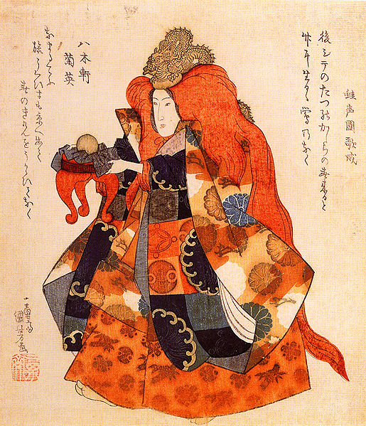
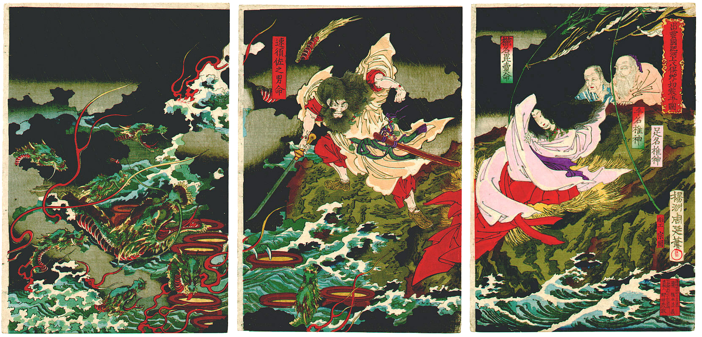
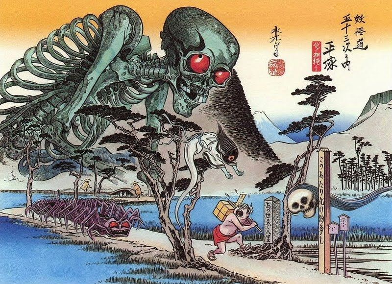
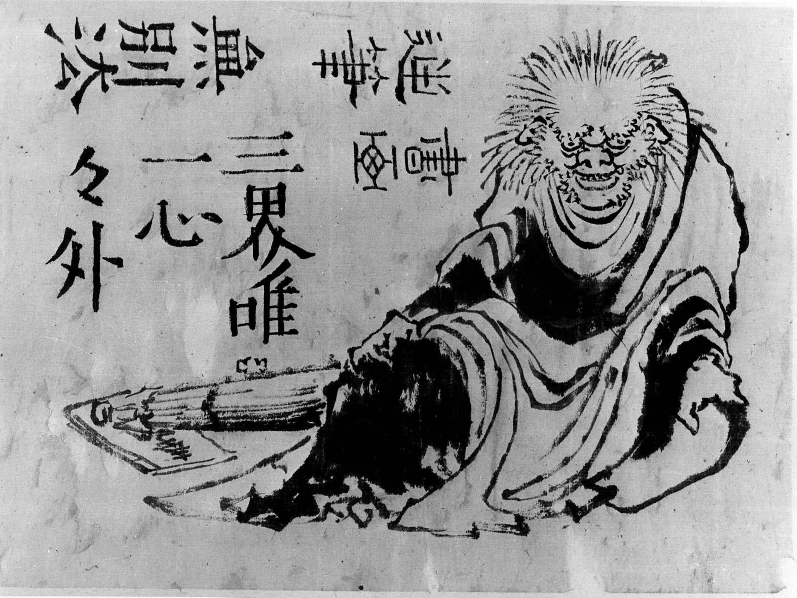

La mitología es un sistema complejo de creencias. El panteón Shinto por sí solo se compone de una colección numerosa de kami ("dioses" o "espíritus" en japonés). A pesar de la influencia de la civilización china antigua, hay partes muy importantes de la religión y mitología japonesa que son únicas.
Contiene tradiciones Shinto y budistas así como creencias populares agrícolas. Por otra parte, a diferencia de la mitología griega, nórdica y egipcia, es relativamente difícil distinguir cuál es verdaderamente un "mito" para los japoneses.
Los mitos japoneses convencionales se basan en el Kojiki, en el Nihonshoki y algunos libros complementarios. El Kojiki que literalmente significa "registro de cosas antiguas" es el libro más viejo reconocido sobre mitos, leyendas y la historia de Japón, y el Nihonshoki es el segundo más antiguo. El Shintoshu explica orígenes de deidades japonesas desde una perspectiva budista mientras que el Hotsuma Tsutae registra una versión diferente sobre la mitología.
Un resultado notable de la mitología japonesa es que explica el origen de la familia imperial, y les representa como descendencia divina.
| DEIDADES | SERES | LUGARES |
|---|---|---|
| Amaterasu | Oni | Yomi |
| Tsuki-Yomi | Kappa | |
| Susanoo | Kitsune | |
| Omoikane | Tanuki | |
| Futsunushi | Obariyon | |
| Tenjin | Inugami | |
| Ryujin | Onmoraki |
Izanagi se lamentó de la muerte de Izanami y emprendió un viaje a Yomi. La oscuridad sofocante de Yomi fue suficiente para provocarle dolor en ausencia de la luz y la vida en la tierra de arriba. Rápidamente buscó a Izanami y la encontró. Él le pidió a ella que regresara con él. Izanami le escupió, indicándole a Izanagi que ya era demasiado tarde. Ella ya había probado el alimento del inframundo y ahora ya era una con la tierra de los muertos. Ella no podría regresar más a la vida.
Izanagi renunció a ceder ante los deseos de Izanami de quedarse en la oscuridad de Yomi. Izanami aceptó volver al mundo superior, pero antes le pidió a Izanagi que le dejara tiempo para dormir y que no entrara en su dormitorio. Mientras que Izanami dormía, él tomó el peine que sostenía su largo cabello y lo encendió como una antorcha. Bajo la repentina explosión de luz, él vio la horrible forma actual de la una vez hermosa y agraciada Izanami. Ahora ella era una forma de carne en descomposición con gusanos y criaturas asquerosas que se deslizaban sobre su cuerpo destrozado.
Gritando ruidosamente, Izanagi comenzó a correr, intentando volver a la vida; abandonando a su esposa muerta. Izanami se despertó llorando indignada y lo persiguió. Al huir, Shikomes salvajes (mujeres asquerosas) también persiguieron al asustado Izanagi, guiadas por Izanami para atraparlo. Pensando rápidamente, Izanagi primero lanzó su gorro, el cual se convirtió en un racimo de uvas negras. Las shikome tropezaron con éstas pero continuaron su búsqueda. Después, Izanagi lanzó su peine, que se convirtió en un grupo de brotes de bambú. Ahora eran las criaturas de Yomi quienes comenzaron a perseguirlo, pero Izanagi orinó en un árbol, creando un gran río que aumentó su aplomo. Desafortunadamente, todavía persiguieron a Izanagi, forzándolo a lanzar melocotones sobre ellos. Él sabía que esto no los retrasaría por mucho tiempo, pero él ya estaba casi libre, porque los límites de Yomi ahora estaban más cerca.
Izanagi llegó rápidamente a la entrada y empujó un canto rodado en la boca de la caverna, la cual era la entrada a Yomi. Izanami gritó detrás de esta impenetrable barricada y le dijo a Izanagi que si él no la dejaba salir ella destruiría a 1000 residentes vivos cada día. Él furiosamente le contestó que entonces el daría vida a 1500.
Y de esta manera comenzó la existencia de la muerte, causada por las manos de la orgullosa Izanami, la esposa abandonada de Izanagi.
El arte clásico japonés toma mucha influencia de la mitología japonesa, normalmente representando a figuras mitológicas o hazañas o actos realizados o por estas, o por héroes. Aquí vamos a proceder a explicar y ver las representaciones en el arte de algunas de las figuras o relatos más importantes de la mitología japonesa.
Espíritus, fantasmas y demonios aparecen en centenares de leyendas que narran desde la creación del archipiélago, a las gestas de guerreros y humildes campesinos. Con raíces sintoístas y budistas, las historias de seres del inframundo han llegado hasta la actualidad de la mano de la televisión, el cine y el manga.
Yamata no Orochi era un dragón mitológico de 8 cabezas y 8 colas que aterrorizaba a dos deidades terrestres, pues, les pedía que cada año sacrificaran a una de sus hijas. Susanoo, el hermano de Amaterasu, tras ser expulsado del cielo tras engañarla, se encuentra con estas deidades y se ofrece a matar a Orochi.
Este acto también ha sido representado en el arte, este siendo descrito como una criatura que tenía una cabeza dividida en ocho y una cola dividida en ocho; sus ojos eran rojos, como una cereza invernal; y en su dorso estaban creciendo abetos y cipreses. Mientras reptaba se extendía sobre un espacio de ocho colinas y ocho valles.
Los Yōkai son una clase de seres mitológicos del folclore japonés. Este tipo de criaturas presentan mucha variedad, pues estos pueden ser seres que adaptan forma humana, espíritus, etc.
Los Yōkai son generalmente más poderosos que los seres humanos, y debido a esto, tienden a ser arrogantes con ellos. Los Yōkai también tienen valores diferentes a los de los seres humanos, y cuando estos principios entran en conflicto, suceden enfrentamientos entre ellos. Son generalmente invulnerables al ataque humano, con la excepción de monjes de Buda especializados en su neutralización.
Algunos Yōkai simplemente evitan a los seres humanos, por lo que generalmente habitan en áreas aisladas lejos de viviendas humanas. Otros Yōkai, sin embargo, deciden vivir cerca de asentamientos humanos conviviendo con ellos.
Este acto también ha sido representado en el arte, este siendo descrito como una criatura que tenía una cabeza dividida en ocho y una cola dividida en ocho; sus ojos eran rojos, como una cereza invernal; y en su dorso estaban creciendo abetos y cipreses. Mientras reptaba se extendía sobre un espacio de ocho colinas y ocho valles.
Los Oni son criaturas del folclore japonés que comparten muchas similitudes con los demonios y ogros de occidente. Pueden tener calvas, o el pelo revuelto y uno o dos cuernos saliendo de sus cabezas.
La mayoría de las veces poseen forma humanoide, pero son mucho más grandes, y en ocasiones han sido mostrados con características antinaturales, poseyendo gran número de ojos o dedos extra. Su piel puede ser de un variado rango de colores, rojo, azul, negro, rosa y verde son particularmente comunes. Tienen tendencia a vestirse con pieles de tigre y llevar garrotes de hierro (kanabō).
